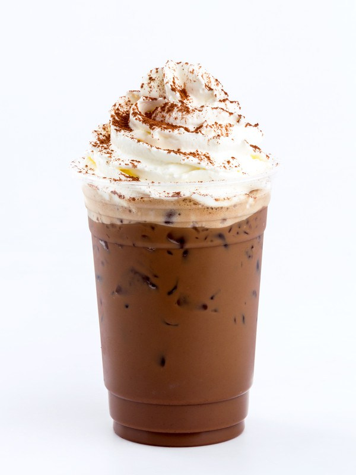
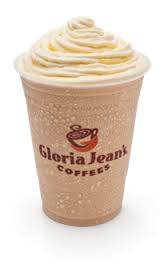
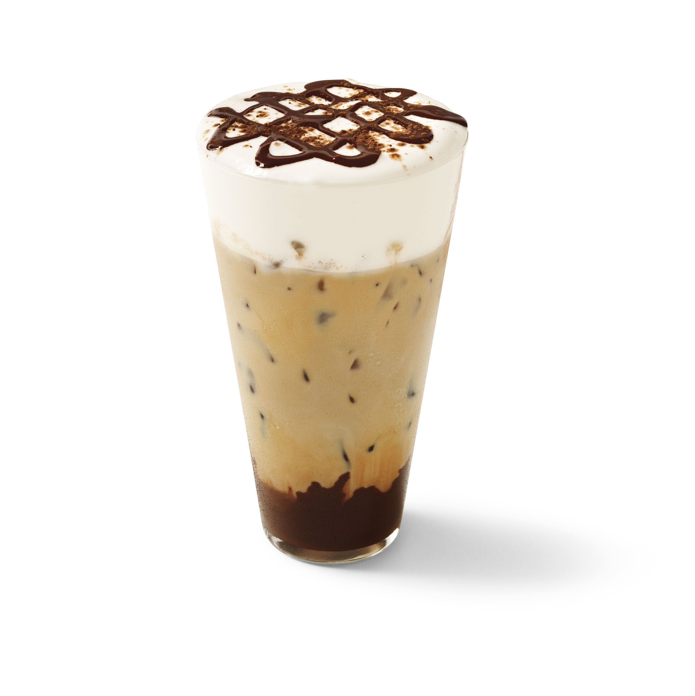

POUR boiling water over coffee crystals in glass bowl or pitcher. Add sugar. Stir until completely dissolved. Blend in cold water and half-and-half. Chill until ready to serve.
POUR over ice in tall glasses. Top with whipped cream, if desired. Serve immediately.
inset nescafe beans using 1 1/2 cups cold water. Combine hot coffee and sugar in glass bowl or pitcher. Stir until completely dissolved. Blend in 1 1/2 cups cold water and half-and-half. Chill. Serve as directed above
Iced mocha

Ingrediants
S.no
Ingrediants
1
espresso
2
cocoa powder
3
Milk
4
sugar if needed..
5
Ice
Directions
First put the cocoa powder and sugar in your cup. Next pour in the espresso shots or coffee. Stir well. Pour ice in the cup until the cup is about 3/4 full of ice. Fill the cup the rest of the way with the milk and stir a bit
Enjoy your iced mocha!.
Vanilla chiller

Ingrediants
S.no
Ingrediants
1
vanilla flavored coffee
2
Milk choclate
3
almond or nougat
4
vanila icecream
5
Ice
Directions
PLACE coffee and candy in blender container cover.
BLEND on high speed until chocolate is chopped into small pieces. Add ice cream; cover. Blend on high speed, using on/off action, until smooth.
POUR into 3 tall glasses. Garnish each serving with 2 Tbsp. thawed COOL WHIP Whipped Topping, if desired. Serve immediately.
Iced Cappuccino

Ingrediants
S.no
Ingrediants
1
Espresso
2
Milk
3
milk froth,steamed
4
cubes
Directions
Using an espresso bean grinder, grind some espresso beans to make 1 tablespoon of ground coffee. Using a commercial espresso machine, put the 1 tablespoon of ground coffee into the portafilter (the cupped handle) and tamp the grounds lightly
Add 6 to 8 ice cubes to a mixing glass and pour the espresso over the cubes. Stir to bring the temperature down. Using a spoon or strainer, strain the cooled espresso into a serving glass.
Using the steam wand of the espresso machine, steam the whole milk so that a tight, small-bubble, microfoam is created. Using a spoon, add only the tight microfoam (about 3 to 4 ounces or an amount equal to the other parts) to the milk and espresso. Serve without any garnishes so as not to mask the delightful flavors.
ESPRESSO
Hot mocha
Ingrediants
S.no
Ingrediants
1
Nescaffe or espresso
2
milk
3
Sugar if needed..
Directions
STEAM milk and Coffee-mate together using espresso machine or microwave on HIGH (100%) power for 1 minute or until very hot. Pour over espresso.
Lactose intolerant? Substitute water for milk..
Hot Cappuccino
Ingrediants
S.no
Ingrediants
1
Nescaffe or espresso
2
Hot milk
3
Sugar if needed..
Directions
After your coffee has brewed, combine the sugar and milk and heat it in your microwave for 2 minutes at the highest setting.
Next, whip the heated milk/sugar mix in your blender for about one minute until it's a fluffy foam..
Fill your cup two thirds full with the coffee and top it off with your heated froth.